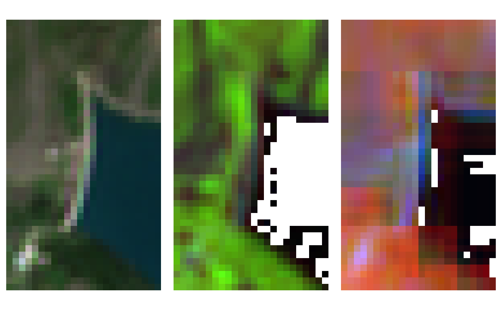

Function to create RGB images from Sentinel-2 reflectances.
s2_rgb( infiles, prod_type = NA, rgb_bands = 4:2, scaleRange = NA, outdir = NA, subdirs = NA, format = NA, compress = "DEFLATE", bigtiff = FALSE, tmpdir = NA, rmtmp = TRUE, parallel = TRUE, overwrite = FALSE, .log_message = NA, .log_output = NA )
| infiles | A vector of input filenames. Input files are paths of products already converted from SAFE format to a format managed by GDAL (use s2_translate to do it); their names must be in the sen2r naming convention (safe_shortname). |
|---|---|
| prod_type | (optional) Output product (see safe_shortname for the list of accepted products). If not provided, it is retrieved from the file name. |
| rgb_bands | (optional) 3-length integer vector, which the number of the bands to be used respectively for red, green and blue. Default is 4:2 (true colours). It is also possible to pass a list of 3-length integer vectors in order to create multiple RGB types for each input file. Notice that this is the actual number name of the bands: so, to use i.e. BOA band 11 (1610nm) use the number 11, even if band 11 is the 10th band of a BOA product (because band 10 is missing). |
| scaleRange | (optional) Range of valid values. If can be a 2-length integer vector (min-max for all the 3 bands) or a 6-length vector or 3x2 matrix (min red, min green, min blue, max red, max green, max blue). Default is to use c(0,2500) for bands 1-5; c(0,7500) bands 6-12. |
| outdir | (optional) Full name of the existing output directory where the files should be created. Default is the same directory of input reflectance files. |
| subdirs | (optional) Logical: if TRUE, different indices are
placed in separated |
| format | (optional) Format of the output file (in a format recognised by GDAL). Default is the same format of input images (or "GTiff" in case of VRT input images). |
| compress | (optional) In the case a GTiff format is present, the compression indicated with this parameter is used. |
| bigtiff | (optional) Logical: if TRUE, the creation of a BigTIFF is forced (default is FALSE). This option is used only in the case a GTiff format was chosen. |
| tmpdir | (optional) Path where intermediate files (VRT) will be created.
Default is a temporary directory.
If |
| rmtmp | (optional) Logical: should temporary files be removed? (Default: TRUE) |
| parallel | (optional) Logical: if TRUE, the function is run using parallel
processing, to speed-up the computation for large rasters.
The number of cores is automatically determined; specifying it is also
possible (e.g. |
| overwrite | (optional) Logical value: should existing thumbnails be overwritten? (default: TRUE) |
| .log_message | (optional) Internal parameter
(it is used when the function is called by |
| .log_output | (optional) Internal parameter
(it is used when the function is called by |
A vector with the names of the created images.
License: GPL 3.0
# \donttest{ # Define file names ex_in <- system.file( "extdata/out/S2A2A_20190723_022_Barbellino_BOA_10.tif", package = "sen2r" ) # Run function ex_out <- s2_rgb( infiles = ex_in, rgb_bands = list(c(11,8,4),c(9,5,4)), scaleRange = list(c(0,7500), matrix(c(rep(0,3),8500,6000,4000),ncol=2)), outdir = tempdir(), compress = 50 )#> #>#> #>#>ex_out#> [1] "/tmp/RtmpzkepNn/RGBb84B/S2A2A_20190723_022_Barbellino_RGBb84B_10.tif" #> [2] "/tmp/RtmpzkepNn/RGB954B/S2A2A_20190723_022_Barbellino_RGB954B_10.tif"# Show output oldpar <- par(mfrow = c(1,3), mar = rep(0,4)) image(stars::read_stars(ex_in), rgb = 4:2, maxColorValue = 3500) image(stars::read_stars(ex_out[1]), rgb = 1:3) image(stars::read_stars(ex_out[2]), rgb = 1:3)